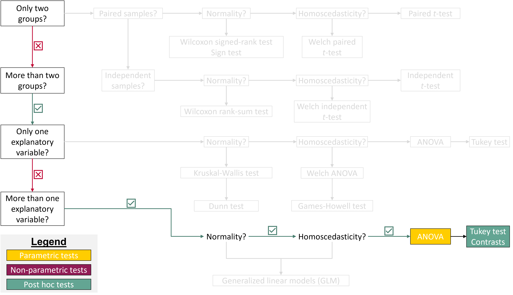
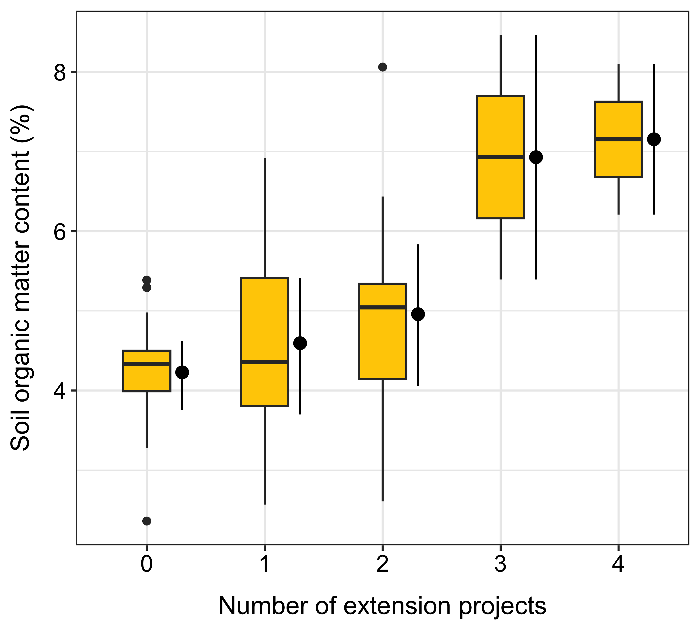
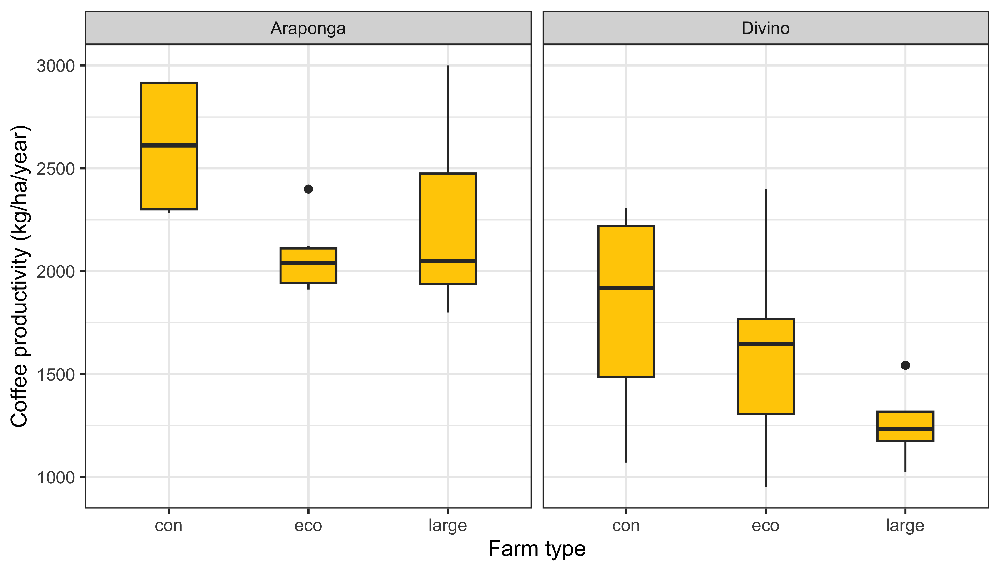
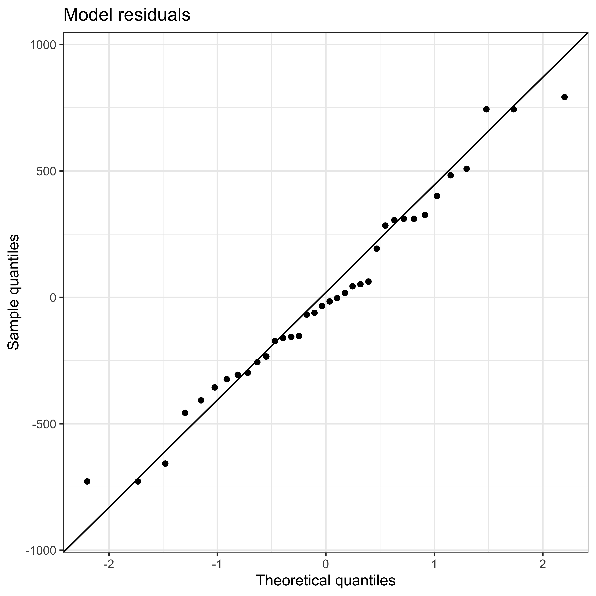
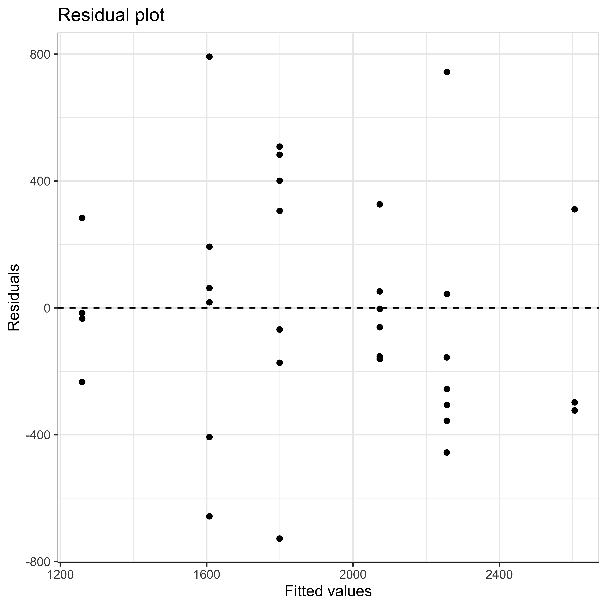

![]()
Show me the code
library(readxl)
library(tidyverse)
library(rstatix)In this tutorial, you will learn how to use contrasts to examine differences among groups based on specific, hypothesis-driven comparisons. Instead of relying on post hoc tests that evaluate all possible pairwise differences, you will learn how to formulate and test targeted contrasts that address particular research questions. You will also explore polynomial contrasts to detect patterns and trends in the data, such as linear or quadratic relationships. In addition, you will extend your understanding of ANOVA by learning how to analyze experiments with two independent variables using two-way ANOVA. You will interpret main effects and interactions, and understand how multiple factors jointly influence a response variable.
Let’s get started!

To work on this tutorial, you will need to load the readxl, rstatix, and tidyverse packages.
library(readxl)
library(tidyverse)
library(rstatix)Start by importing the data used in this course (see previous tutorials).
#Option 1 (csv file)
data <- read_csv("gss_statistics_master_data_set2.csv")
#Option 2 (Excel file)
data <- read_excel("gss_statistics_master_data_set2.xlsx")Contrasts are used to test specific, hypothesis-driven differences among group means. Rather than comparing all possible pairs of groups (like in a post hoc test), contrasts allow us to compare one mean to another mean, or one group of means to another group of means, based on a clearly defined research question.
To illustrate how contrasts work, let’s focus on the same research question as in the previous tutorial:
Is soil organic matter content different among agroecological, conventional, and large-scale farms?
This time, let’s be more specific about the hypotheses we want to test and comparisons we want to make:
Hypothesis 1: We expect soil organic matter content to be higher in agroecological farms than in conventional and large-scale farms.
Hypothesis 2: We expect soil organic matter content to be higher in large-scale farms than in conventional farms.
For each research hypothesis (1 and 2), formulate a null hypothesis.
Null hypothesis 1: there is no difference in soil organic matter content between agroecological farms and other farms (conventional and large-scale farms).
Null hypothesis 2: there is no difference in soil organic matter content between large-scale and conventional farms.
In R, contrasts are specified using contrast coefficients that define how group means are compared. When setting up contrast coefficients for a particular comparison, four key rules should be followed:
Treatments that are grouped together receive the same sign (either positive or negative).
Groups of means that are being contrasted against each other receive opposite signs.
Factor levels that are not included in the comparison are assigned a coefficient of zero.
The sum of all contrast coefficients must equal zero.
Our dataset contains data for three types of farm: agroecological (eco), conventional (con), and large-scale (large). The farm_type variable is a factor with three levels.
Choose contrast coefficients to test the hypothesis that soil organic matter content is higher in agroecological farms than in conventional and large-scale farms. Here, we want to compare eco farms against the combined mean of con and large farms.
| Eco | Con | Large |
|---|---|---|
| ? | ? | ? |
According to the rules for setting contrast coefficients, the two farm types that are lumped together (con and large) must receive the same sign, while the group they are contrasted with (eco) must receive the opposite sign. Because all three farm types are included in this comparison, none of them receive a coefficient of zero. Finally, the coefficients must sum to zero. A suitable set of contrast coefficients is therefore eco = +2, con = –1, and large = –1. Eco receives the opposite sign from the other two farm types, con and large share the same sign because they are grouped together, and the coefficients sum to zero (2 – 1 – 1 = 0). Note that this is only one option among many.
| Eco | Con | Large |
|---|---|---|
| +2 | -1 | -1 |
Choose contrast coefficients to test the hypothesis that soil organic matter content is higher in large-scale farms than in conventional farms. Here, we want to compare large farms against con farms. eco farms are not considered here.
| Eco | Con | Large |
|---|---|---|
| ? | ? | ? |
Following the rules to set contrast coefficients, the two farm types being contrasted (large and con) must receive opposite signs, and the excluded group (eco) must receive a coefficient of zero. The coefficients must again sum to zero. A suitable set of contrast coefficients is eco = 0, con = –1, and large = +1. eco is excluded from the comparison, large and con receive opposite signs, and the coefficients sum to zero (0 – 1 + 1 = 0). Note that this is only one option among many.
| Eco | Con | Large |
|---|---|---|
| 0 | -1 | +1 |
Now that we have defined the contrast coefficients for each hypothesis, we can combine them into a contrast matrix and rerun the one-way ANOVA to examine how farm type affects soil organic matter content under these specified comparisons.
farm_type variable into a factor using as.factor().farm_type factor using the function levels().c1 and c2, which contain contrast coefficients for hypotheses 1 and 2, respectively. Make sure to enter the contrast coefficients in the alphabetical order of the three factor levels, that is, con first, followed by eco, and then large.c1 and c2 into a contrast matrix called contrast.matrix using cbind(c1, c2), where each column represents one contrast.farm_type by assigning this matrix to contrasts(data$farm_type).farm_type) on soil organic matter content (SOM). See Exercise 8 of the previous tutorial if you do not remember how to do this. Show the ANOVA table using summary().data$farm_type <- as.factor(data$farm_type)levels(data$farm_type)[1] "con" "eco" "large"#For hypothesis 1
c1 <- c(-1, 2, -1)
#For hypothesis 2
c2 <- c(-1, 0, 1)contrast.matrix <- cbind(c1, c2)contrasts(data$farm_type) <- contrast.matrix#Fit ANOVA model
model <- aov(SOM ~ farm_type,
data = data)
#Show ANOVA table
summary(model) Df Sum Sq Mean Sq F value Pr(>F)
farm_type 2 37.18 18.589 15 2.32e-05 ***
Residuals 33 40.89 1.239
---
Signif. codes: 0 '***' 0.001 '**' 0.01 '*' 0.05 '.' 0.1 ' ' 1To break down the effect of the factor farm_type into the individual contrasts that we previously defined, we need to use the split argument in the summary() function used to display the ANOVA table. This would look like this:
summary(model, split=list(farm_type=list("Eco vs. Con and Large"=1, "Con vs. Large" = 2)))
Using the split argument, we specify that the factor farm_type should be divided into two components. The first contrast (column 1 of the contrast matrix) is labeled "Eco vs. Con and Large", and the second contrast (column 2) is labeled "Con vs. Large". The numbers 1 and 2 refer to the first and second contrast columns in the contrast matrix.
summary() function on the ANOVA object using the split argument (see above for R code).summary(model,
split=list(farm_type=list("Eco vs. Con and Large"=1,
"Con vs. Large" = 2))) Df Sum Sq Mean Sq F value Pr(>F)
farm_type 2 37.18 18.59 15.002 2.32e-05 ***
farm_type: Eco vs. Con and Large 1 37.12 37.12 29.960 4.56e-06 ***
farm_type: Con vs. Large 1 0.05 0.05 0.044 0.836
Residuals 33 40.89 1.24
---
Signif. codes: 0 '***' 0.001 '**' 0.01 '*' 0.05 '.' 0.1 ' ' 1Hypothesis 1: The p-value (4.56e-06) is much lower then the significance threshold (0.05). Therefore, we reject the null hypothesis that there is no difference in soil organic matter content between agroecological farms and other farms (conventional and large-scale farms). We conclude that soil organic matter content in agroecological farms is significantly different from that in conventional and large-scale farms.
Hypothesis 2: The p-value (0.836) is much larger than the significance threshold (0.05). Therefore, we fail to reject the null hypothesis that there is no difference in soil organic matter content between large-scale and conventional farms. We conclude that soil organic matter contents in conventional and large-scale farms are not significantly different from each other.
Polynomial contrasts are used to test for specific trends or patterns in a response variable across ordered levels of a factor. They are particularly useful when the predictor is an ordinal variable. For example, they can examine whether a response increases or decreases linearly, or whether it follows a more complex, curved (quadratic or cubic) pattern.
To illustrate polynomial contrasts, let’s focus on the relationship between soil organic matter content (SOM) and the number of projects accessed (n_ext_projects variable). The n_ext_projects variable is a discrete variable going from 0 to 4.
n_ext_projects variable to a factor using as.factor().contr.poly(). To use this function, you just need to specify the number of levels (n) that your factor has (in our case, n_ext_projects has 5 levels). Store the contract coefficients into an object called contrast.matrix.poly. The contrast coefficients created by contr.poly() are designed to test linear, quadratic, and higher-order trends.n_ext_projects by assigning this matrix to contrasts(data$n_ext_projects).n_ext_projects) on soil organic matter content (SOM). Show the ANOVA table using summary().summary() function on the ANOVA object using the split argument. We are only interested in examining the results for the first two trend components (linear and quadratic). Linear contrasts are stored in the first column of contrast.matrix.poly, while quadratic contrasts are stored in the second column.data$n_ext_projects <- as.factor(data$n_ext_projects)contrast.matrix.poly <- contr.poly(n=5)contrasts(data$n_ext_projects) <- contrast.matrix.poly#Fit ANOVA model
model <- aov(SOM ~ n_ext_projects,
data = data)
#Show ANOVA table
summary(model) Df Sum Sq Mean Sq F value Pr(>F)
n_ext_projects 4 25.02 6.256 3.656 0.0149 *
Residuals 31 53.05 1.711
---
Signif. codes: 0 '***' 0.001 '**' 0.01 '*' 0.05 '.' 0.1 ' ' 1summary(model,
split=list(n_ext_projects=list("Linear"=1,
"Quadratic" = 2))) Df Sum Sq Mean Sq F value Pr(>F)
n_ext_projects 4 25.02 6.256 3.656 0.0149 *
n_ext_projects: Linear 1 20.75 20.745 12.124 0.0015 **
n_ext_projects: Quadratic 1 2.40 2.401 1.403 0.2452
Residuals 31 53.05 1.711
---
Signif. codes: 0 '***' 0.001 '**' 0.01 '*' 0.05 '.' 0.1 ' ' 1There is a significant linear trend between the number of extension projects and soil organic matter content (F(1,31)=12.124; p-value = 0.0015). The quadratic trend, however, is not significant (F(1,31)=1.403; p-value = 0.2452).

In a one-way ANOVA, we examine the effect of a single explanatory variable on a response variable. So far, we have focused only on farm type (farm_type) as the explanatory variable. However, other factors may also influence the response. For example, location, represented in the dataset by municipality (municipality), could affect how agroecosystems function. Different municipalities may vary in environmental conditions such as rainfall, temperature, or soil type, and these differences can influence biodiversity, ecosystem processes, and agricultural production. To account for this additional source of variation, we can use a two-way ANOVA, including both farm type and municipality as explanatory variables and coffee productivity as the response variable. This allows us to test whether coffee production differs among farm types, among municipalities, and whether the effect of farm type depends on location (i.e., interaction between farm type and municipality).
This is an important statistical concept. What do we mean when we say that “there is a significant interaction between explanatory variables”?
An interaction between independent variables occurs when the effect of one explanatory variable on the response variable depends on the level of another explanatory variable. In other words, the influence of one factor is not constant across all levels of the second factor.
Statistically, a significant interaction term in the model tells us that the combined effect of the two variables cannot be explained by simply adding their separate (main) effects (i.e., effects are not additive).
Our new research question is:
Does coffee production differ among farm types and municipalities, and does the effect of farm type on coffee production depend on the municipality?
Based on the research question above, formulate a null hypothesis for each fixed factor and for the interaction between factors.
Null hypothesis (farm type): there are no differences in coffee productivity among farm types.
Null hypothesis (municipality): there are no differences in coffee productivity among municipalities.
Null hypothesis (interaction): the effects of farm type and municipality on coffee productivity are additive (i.e., the effect of farm type on coffee productivity does not depend on municipality).
As usual, let’s first start by plotting the data.
Create a box plot showing differences in coffee productivity (coffee_prod variable) among farm types (farm_type) and municipalities (municipality). Tip: plot farm_type along the x-axis and use facet_wrap() to create a separate panel for each municipality.
ggplot(data = data, mapping = aes(x = farm_type,
y = coffee_prod)) +
geom_boxplot(width = 0.4,
fill = "#FFCD00")+ #Create a box plot
xlab("Farm type")+ #Change name of x axis
ylab("Coffee productivity (kg/ha/year)")+ #Change name of y axis
theme_bw()+ #This creates a black/white plot
facet_wrap(~municipality)
In R, a two-way ANOVA model can be fitted using the aov() function. The first argument of this function is a formula that specifies the model structure, including the response variable (here, coffee_prod) and the explanatory variables.
To fit a model that includes both main effects and their interaction, we use the following formula:
coffee_prod ~ farm_type * municipality
The * operator tells R to include the main effects of farm_type and municipality as well as their interaction. In other words, this shorthand notation expands to:
coffee_prod ~ farm_type + municipality + farm_type*municipality
If we are only interested in testing the main effects of the two predictor variables, without considering their interaction, we would instead write:
coffee_prod ~ farm_type + municipality
This model assumes that the effect of farm type is consistent across municipalities (i.e., no interaction).
farm_type and municipality are factor variables.summary() to display the ANOVA table.data$farm_type <- as.factor(data$farm_type)
data$municipality <- as.factor(data$municipality)model <- aov(coffee_prod ~ farm_type*municipality,
data = data)summary(model) Df Sum Sq Mean Sq F value Pr(>F)
farm_type 2 318973 159487 0.883 0.424
municipality 1 4620469 4620469 25.574 1.98e-05 ***
farm_type:municipality 2 413067 206534 1.143 0.332
Residuals 30 5420096 180670
---
Signif. codes: 0 '***' 0.001 '**' 0.01 '*' 0.05 '.' 0.1 ' ' 1The interaction between farm type and municipality is not significant (p = 0.332). This means that the effect of farm type on coffee productivity does not depend on the municipality (i.e., we fail to reject the null hypothesis that the effects of farm type and municipality on coffee productivity are additive).
The results also show that municipality has a significant effect on coffee productivity (p = 0.00002), indicating that coffee production differs between the two municipalities. From Figure 2, it is clear that farms in the municipality of Divino have a lower average coffee productivity than the farms in the Araponga municipality.
In contrast, farm type does not have a significant effect on coffee productivity (p = 0.424), suggesting that coffee productivity does not differ significantly among farm types when averaged across municipalities.
Similarly to what we did for the one-way ANOVA, we can calculate \(\eta^2\) for each source of variation (main effects and their interaction). For each source of variation, \(\eta^2\) is the proportion of the total variation (\(SS_{total}\)) that is explained by the variation of the independent (or explanatory) variable.
Similarly to the one-way ANOVA, we can calculate \(\eta^2\) for each source of variation, including the main effects and their interaction. For a given source of variation, \(\eta^2\) represents the proportion of the total variability in the data (\(SS_{total}\)) that is attributable to that factor. After a two-way ANOVA, you can calculate three \(\eta^2\): one for each main effect (e.g., farm type and municipality), and one for the interaction (Equation 1, Equation 2, Equation 3).
\[ \eta_{factor1}^2=\frac{SS_{factor1}}{SS_{total}}=\frac{SS_{factor1}}{SS_{factor1}+SS_{factor2}+SS_{interaction}+SS_{res}} \tag{1}\]
\[ \eta_{factor2}^2=\frac{SS_{factor2}}{SS_{total}}=\frac{SS_{factor2}}{SS_{factor1}+SS_{factor2}+SS_{interaction}+SS_{res}} \tag{2}\]
\[ \eta_{interaction}^2=\frac{SS_{interaction}}{SS_{total}}=\frac{SS_{interaction}}{SS_{factor1}+SS_{factor2}+SS_{interaction}+SS_{res}} \tag{3}\]
We can do these calculations easily in R, using sum of square values provided in the ANOVA table, but we can also do it faster using the eta_squared() function in the rstatix package. The only input you need to provide in an aov object.
eta_squared() to calculate the same \(\eta^2\) values.eta_squared(model) farm_type municipality farm_type:municipality
0.02960967 0.42890915 0.03834421 Most of the variation in coffee productivity is associated with differences among municipalities, which account for 42.9% of the total variability. The interaction between farm type and municipality explains an additional 3.8% of the variation. In contrast, farm type by itself explains only 3.0% of the total variation, suggesting that differences in coffee productivity between farm types are relatively small when municipality is not taken into account.
To check ANOVA assumptions, we will follow the same procedure introduced in the previous tutorial. We will first fit the two-way ANOVA model. Then, we will check whether the normality and homoscedasticity assumptions are met by (1) examining whether the model residuals are approximately normally distributed, and (2) creating a residual plot.
After fitting an ANOVA model, you can check whether the normality assumption is met by examining whether the model residuals are approximately normally distributed. This can be done by (1) using the residuals() function on the ANOVA model object to extract the model residuals (i.e. the differences between observed values and model predictions), (2) applying a Shapiro-Wilk test to the residuals, and (3) creating a Q-Q plot using model residuals.
residuals() function on the model object. Store these residuals in a new column (coffee_prod_residuals) in the data object.data$coffee_prod_residuals <- residuals(model)shapiro.test(data$coffee_prod_residuals)
Shapiro-Wilk normality test
data: data$coffee_prod_residuals
W = 0.97415, p-value = 0.5492ggplot(data, aes(sample = coffee_prod_residuals)) +
stat_qq() +
stat_qq_line() +
theme_bw() +
xlab("Theoretical quantiles")+
ylab("Sample quantiles")+
ggtitle("Model residuals")
The p-value of the Shapiro-Wilk test is greater than the significance threshold (0.05). Therefore, we fail to reject the null hypothesis that the model residuals are normally distributed. This result is supported by the Q-Q plot, in which most points lie close to the reference line. This suggests that the assumption of normality (of the residuals) is met.
After fitting an ANOVA model, you can check the homoscedasticity assumption by creating a residual plot.
fitted() function on the model object. Store these values in a new column (coffee_prod_fitted) in the data object.data$coffee_prod_fitted <- fitted(model)ggplot(data, aes(x = coffee_prod_fitted,
y = coffee_prod_residuals)) +
geom_point() + #Add points to the plot
geom_hline(yintercept = 0,
linetype = "dashed")+ #Add horizontal dashed line at y=0
theme_bw() +
xlab("Fitted values")+
ylab("Residuals")+
ggtitle("Residual plot")
The residuals are scattered around zero. Although the variance of the residuals seem to be smaller in some groups than others, there is no clear systematic pattern, such as a funnel shape, that would indicate heteroscedasticity. This suggests that the assumption of homoscedasticity is reasonably met.
Based on the results of our two-way ANOVA, a post hoc test is not strictly necessary. The analysis showed that municipality was the only factor with a significant effect on coffee productivity (p < 0.05). Neither the interaction between farm type and municipality nor the main effect of farm type (averaged across municipalities) was statistically significant (p > 0.05). Because the dataset includes only two municipalities (Araponga and Divino), no additional pairwise comparisons are required to determine which municipalities differ. With only two groups, a significant ANOVA already indicates that their means are different, and the direction of this difference (higher productivity in Araponga than in Divino) can be seen directly in Figure 2.
Post hoc tests are mainly used when there are three or more groups and we need to identify which specific groups differ from each other. However, to demonstrate how post hoc comparisons can be performed after a two-way ANOVA, we will carry out one here. As in the previous tutorial, we will use Tukey’s Honest Significant Difference (Tukey HSD) test. In R, this test can be performed with the TukeyHSD() function from the stats package.
TukeyHSD(model) Tukey multiple comparisons of means
95% family-wise confidence level
Fit: aov(formula = coffee_prod ~ farm_type * municipality, data = data)
$farm_type
diff lwr upr p adj
eco-con -227.92544 -655.7167 199.8658 0.3989016
large-con -144.11491 -571.9062 283.6764 0.6873068
large-eco 83.81053 -343.9808 511.6018 0.8798577
$municipality
diff lwr upr p adj
Divino-Araponga -689.4613 -978.8191 -400.1034 3.4e-05
$`farm_type:municipality`
diff lwr upr p adj
eco:Araponga-con:Araponga -532.7412 -1367.2645 301.78220 0.3979553
large:Araponga-con:Araponga -349.5338 -1141.2322 442.16453 0.7592508
con:Divino-con:Araponga -806.4498 -1598.1482 -14.75140 0.0439305
eco:Divino-con:Araponga -998.3761 -1832.8995 -163.85272 0.0118750
large:Divino-con:Araponga -1346.1766 -2260.3511 -432.00205 0.0012973
large:Araponga-eco:Araponga 183.2073 -515.0050 881.41966 0.9656480
con:Divino-eco:Araponga -273.7086 -971.9210 424.50372 0.8369768
eco:Divino-eco:Araponga -465.6349 -1212.0553 280.78547 0.4231555
large:Divino-eco:Araponga -813.4354 -1647.9588 21.08793 0.0594278
con:Divino-large:Araponga -456.9159 -1103.3350 189.50309 0.2902933
eco:Divino-large:Araponga -648.8422 -1347.0546 49.37010 0.0803846
large:Divino-large:Araponga -996.6427 -1788.3411 -204.94437 0.0073037
eco:Divino-con:Divino -191.9263 -890.1386 506.28604 0.9582372
large:Divino-con:Divino -539.7268 -1331.4252 251.97156 0.3275180
large:Divino-eco:Divino -347.8005 -1182.3239 486.72285 0.7997330We found no evidence that the effect of farm type on coffee productivity depended on municipality, as the interaction between farm type and municipality was not significant (F(2, 30) = 1.14, p = 0.332). However, coffee productivity was significantly higher in Araponga than in Divino on average (F(1, 30) = 25.6, p < 0.001). In contrast, farm type itself did not have a significant overall effect on productivity when averaged across municipalities (F(2, 30) = 0.88, p = 0.424).